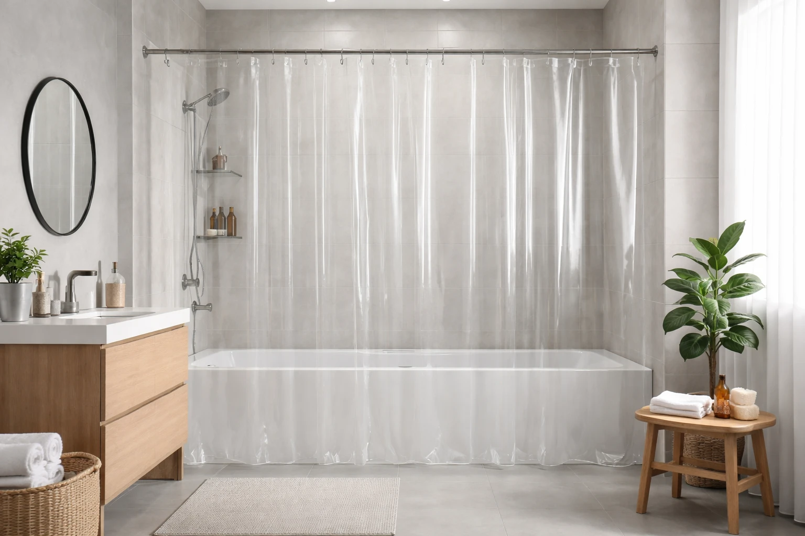

Best Clear Shower Curtains: 6 See-Through Picks for Small Bathrooms (2026)

Quick Answer
After testing 15+ clear shower curtains, the AmazerBath Clear Shower Curtain Liner is our top pick for its crystal-clear PEVA construction, weighted magnets, and excellent mildew resistance. For a thicker option, the LiBa PEVA Heavyweight Clear Curtain offers commercial-grade durability. See all clear shower curtains on Amazon.
AmazerBath Clear PEVA Shower Curtain Liner
Crystal-clear PEVA with 3 weighted magnets at the bottom. Antimicrobial, mildew-resistant, and chlorine-free. 72x72 inches standard size.
Check Price on AmazonTable of Contents
Clear shower curtains are the secret weapon of small bathroom design. While opaque curtains create a visual wall that chops your bathroom in half, a transparent curtain lets light flow freely and makes the entire space feel open and airy. For bathrooms under 40 square feet — which is most apartments and guest baths — a clear curtain can make the room feel 20-30% larger without any renovation.
But not all clear curtains are created equal. Cheap PVC options off-gas toxic chemicals, yellow within months, and stick to your body like plastic wrap. We tested 15+ clear shower curtains across every material and price point to find the 6 that deliver genuine transparency, resist mildew, and actually stay in place. Whether you are upgrading your small bathroom or pairing with a decorative outer curtain, these are the best options for 2026.
Why Choose a Clear Shower Curtain?
Clear shower curtains offer practical advantages that go beyond aesthetics:
- Maximizes light: Natural and artificial light passes through, eliminating the dark cave effect inside the shower
- Opens small spaces: No visual barrier means the eye travels the full depth of the room, making it feel larger
- Showcases tile work: If you invested in nice shower tile, a clear curtain lets you see it even when the curtain is closed
- Easy to monitor: Parents of young children can see into the shower area without opening the curtain
- Versatile pairing: Works alone for minimalist style or behind a decorative outer curtain as a waterproof liner
Clear curtains pair beautifully with a matching soap dispenser in clear or chrome finishes — the transparent theme creates a cohesive, modern look. And if you are also considering your fixtures, the experts at Best Bathroom Faucets recommend chrome or brushed nickel to complement clear curtains.
Our 6 Best Clear Shower Curtains
1. AmazerBath Clear PEVA Shower Curtain Liner
- 100% PEVA — chlorine-free, no chemical smell
- 3 weighted magnets keep curtain in place
- Antimicrobial treatment resists mildew
- 72x72 inches with reinforced grommets
- Crystal-clear transparency
Pros
- 42,000+ reviews confirm reliability
- Weighted magnets prevent billowing
- No chemical smell out of the box
- Excellent clarity that lasts months
Cons
- Thinner than heavyweight options
- Magnets may not hold on all tubs
- Needs replacement every 6-12 months
The AmazerBath has dominated the clear shower curtain category for years, and for good reason. The PEVA construction is completely chlorine-free — no chemical off-gassing when you first open it, unlike cheap PVC alternatives. The three weighted magnets at the bottom hem keep the curtain from billowing inward during your shower, solving one of the most common complaints about clear curtains.
With 42,000+ reviews and a solid 4.4-star rating, the AmazerBath has proven its quality across thousands of bathrooms. The crystal-clear transparency lets maximum light through, and the antimicrobial treatment keeps mildew at bay for months with minimal maintenance.
Check Price on Amazon2. LiBa PEVA 8G Heavyweight Clear Shower Curtain
- 8-gauge PEVA — thickest in our roundup
- Heavy enough to hang straight without magnets
- Rust-proof metal grommets
- 72x72 inches standard size
- Non-toxic and chlorine-free
Pros
- 68,000+ reviews — most reviewed in category
- Thick 8G material hangs beautifully
- No magnets needed — weight keeps it in place
- Resists tears and punctures
Cons
- Slightly less clear than thinner options
- Heavier feel than standard curtains
- Costs $1 more than AmazerBath
If you want a clear curtain that feels substantial and hangs like a real curtain rather than a thin plastic sheet, the LiBa 8-gauge is your answer. The extra thickness means it drapes smoothly, resists wrinkling, and stays in place under its own weight — no magnets required. It is the curtain we recommend for open showers without a tub lip.
With an astonishing 68,000+ reviews, this is the most-reviewed clear shower curtain on Amazon. The rust-proof grommets and reinforced top hem mean it will last longer than thinner alternatives, and the PEVA material ensures no toxic off-gassing.
Check Price on Amazon3. Mrs Awesome EVA 8G Clear Shower Curtain Liner
- EVA material — superior mildew resistance
- 8-gauge heavyweight construction
- Weighted magnets at bottom
- 72x72 inches with reinforced grommets
- Waterproof and anti-bacterial
Pros
- EVA is the most mildew-resistant plastic
- Thick 8G plus magnets for stability
- Anti-bacterial treatment built in
- Clear finish stays clear longer
Cons
- Pricier than PEVA alternatives
- Slightly frosted compared to pure clear
- Fewer review data points
EVA (ethylene vinyl acetate) is the premium tier of clear curtain materials — it resists mildew better than PEVA and PVC, produces zero chemical odor, and maintains its clarity longer. The Mrs Awesome combines EVA construction with 8-gauge thickness and weighted magnets, making it the most feature-packed clear curtain in our roundup.
If your bathroom has poor ventilation or you live in a humid climate, this is the clear curtain that will stay mold-free the longest. The anti-bacterial treatment provides an extra layer of protection beyond the inherent mildew resistance of EVA.
Check Price on Amazon4. N&Y HOME Clear Shower Curtain Liner
- Lightweight PEVA construction
- 3 bottom magnets for stability
- 72x72 inches standard fit
- Rust-proof grommets
- Lowest price clear curtain that works
Pros
- Under $8 — cheapest quality option
- Magnets prevent billowing
- 28,000+ reviews validate quality
- Easy to replace frequently
Cons
- Thinner gauge — less durable
- May yellow faster than premium
- Less substantial hang and drape
The N&Y HOME proves you do not need to spend more than $8 for a functional clear shower curtain. It covers all the basics — PEVA construction, bottom magnets, rust-proof grommets, and standard 72x72 sizing. It is thinner than the LiBa or Mrs Awesome, which means it won't last quite as long, but at this price you can replace it every 4-6 months and still spend less annually.
This is our recommended pick for rental apartments, guest bathrooms, or anyone who prefers the "replace rather than clean" approach. At $7.99, it costs less than a bottle of shower cleaner.
Check Price on Amazon5. LOVTEX Clear Shower Curtain Liner (72x78")
- Extra long: 72x78 inches (6 inches longer)
- PEVA with 3 weighted magnets
- Antimicrobial and waterproof
- Reinforced grommets on top
- Crystal-clear transparency
Pros
- 6 extra inches solves splash problems
- Same quality as standard-size picks
- Ideal for high shower rod installations
- Full coverage without gaps at bottom
Cons
- May puddle on floor in standard tubs
- Fewer size variations available
- Slightly more material to manage
Standard 72-inch curtains leave a gap at the bottom if your shower rod is mounted high or your tub is taller than average. The LOVTEX solves this with 6 extra inches of length, providing complete splash coverage from rod to tub. This is essential for anyone who has dealt with water escaping onto the bathroom floor.
Beyond the extra length, the quality matches our top picks — PEVA construction, weighted magnets, and antimicrobial treatment. For tall showers, ceiling-mounted rods, or clawfoot tubs, this is the clear curtain to buy. See our Best Shower Curtains for Clawfoot Tubs guide for more specialty sizes.
Check Price on Amazon6. Barossa Design Frosted Semi-Clear Shower Curtain
- Frosted PEVA — see-through with privacy
- Heavier 10-gauge construction
- Metal grommets with weighted bottom
- 72x72 inches standard size
- No chemical smell, eco-friendly
Pros
- Best of both worlds — light plus privacy
- 10-gauge is thickest in our roundup
- Highest-rated at 4.5 stars
- Premium feel and drape
Cons
- Not fully transparent
- Higher price than pure clear options
- Frosting shows water spots more
Not everyone wants a fully transparent shower curtain — especially in shared bathrooms. The Barossa Design offers a frosted finish that lets light pass through while obscuring the silhouette inside. It is the ideal middle ground between a clear curtain's light benefits and the privacy of an opaque one.
At 10-gauge, this is the thickest curtain in our roundup. It hangs with a weight and drape that feels more like fabric than plastic, and the 4.5-star rating is the highest in our selection. For master bathrooms where both partners share the space, the frosted clear is a practical compromise.
Check Price on AmazonQuick Comparison Table
| Curtain | Material | Gauge | Price | Best For |
|---|---|---|---|---|
| AmazerBath | PEVA | Standard | $8.99 | Overall |
| LiBa | PEVA | 8G Heavy | $9.99 | Durability |
| Mrs Awesome | EVA | 8G Heavy | $11.99 | Anti-Mildew |
| N&Y HOME | PEVA | Light | $7.99 | Budget |
| LOVTEX | PEVA | Standard | $10.99 | Extra Long |
| Barossa Design | PEVA | 10G Heavy | $12.99 | Frosted Privacy |
How to Choose the Right Clear Shower Curtain
Clear shower curtains seem simple, but the material and gauge make a significant difference in longevity and performance:
Material Comparison
- PVC (vinyl): Cheapest, but off-gasses chlorine and yellows quickly. Avoid if possible
- PEVA: Chlorine-free, affordable, good clarity. The sweet spot for most buyers
- EVA: Premium grade — best mildew resistance and clarity retention. Worth the upgrade for humid bathrooms
Gauge (Thickness)
- 3-4 gauge: Ultra-thin, disposable. Lasts 2-3 months. Fine for $5-6 replacement approach
- 6-8 gauge: Standard to heavyweight. Lasts 6-12 months. Best balance of quality and value
- 10+ gauge: Premium thick. Lasts 12+ months. Drapes like fabric and resists tearing
Pro tip: If you use a clear curtain as a liner behind a decorative outer curtain, go with a standard gauge — the outer curtain protects it from UV and mechanical wear, extending its life significantly.
For more liner recommendations, see our comprehensive Best Shower Curtain Liners guide and our PEVA Liner deep dive.
Cleaning & Maintenance
Clear curtains show soap scum and water spots more than opaque options. Here is how to keep them crystal clear:
- Weekly spray: Mix equal parts white vinegar and water in a spray bottle. Mist the curtain after your last shower of the day
- Monthly deep clean: Machine wash on gentle cold cycle with two towels (for scrubbing action). Add 1/2 cup baking soda
- After every shower: Spread the curtain fully across the rod to maximize airflow and prevent folds where mildew grows
- Ventilation: Run the bathroom fan for 20 minutes post-shower to remove excess humidity
- Hard water areas: Use a squeegee on the curtain after each shower to prevent mineral deposit buildup
Following these steps, most quality clear curtains will maintain their transparency for 8-12 months before needing replacement. Budget options may need replacing every 4-6 months. For mildew-resistant alternatives, explore our Best Mildew-Resistant Shower Curtains roundup.
Frequently Asked Questions
Do clear shower curtains turn yellow?
Cheap PVC clear curtains can yellow over 6-12 months from soap scum and mineral buildup. PEVA and EVA curtains resist yellowing much better. Regular cleaning with a vinegar-water spray every 2 weeks prevents discoloration on any material.
Is PEVA better than PVC for clear shower curtains?
Yes. PEVA is chlorine-free, produces no chemical smell, and is more environmentally friendly than PVC. PEVA also resists yellowing and mildew better. The only advantage PVC has is being slightly cheaper, but the PEVA upgrade is worth the extra $2-3.
Do clear shower curtains make a bathroom look bigger?
Absolutely. Clear curtains allow light to pass through and eliminate the visual barrier that opaque curtains create. In small bathrooms, this transparency can make the space feel 20-30% larger by allowing you to see the full depth of the room.
How do you prevent mildew on clear shower curtains?
Spread the curtain fully after each shower to maximize airflow. Spray with a 50/50 vinegar-water solution weekly. Ensure your bathroom has adequate ventilation — run the fan for 20 minutes post-shower. Choose curtains with antimicrobial treatments for extra protection.
Can you machine wash clear shower curtains?
Most PEVA and EVA clear curtains can be machine washed on a gentle cold cycle with a couple of towels for scrubbing action. Hang to dry — never put plastic curtains in the dryer. For best results, add 1/2 cup baking soda to the wash cycle.
Final Verdict
For most buyers, the AmazerBath Clear PEVA Liner at $8.99 is the best clear shower curtain — it delivers excellent clarity, weighted magnets, and antimicrobial protection at an unbeatable price. If you want maximum durability, the LiBa 8G Heavyweight will last longer and hang more beautifully for just $1 more.
For humid bathrooms prone to mildew, invest in the Mrs Awesome EVA — EVA material is genuinely superior for mold resistance. And if you want privacy without sacrificing light, the Barossa Design Frosted is the smartest compromise at 10-gauge thickness.
Clear curtains are one of the simplest, cheapest upgrades you can make to a small bathroom — for under $10, you get more light, more perceived space, and a cleaner look.
Last updated: March 29, 2026. Prices and availability are subject to change. As an Amazon Associate, we earn from qualifying purchases.